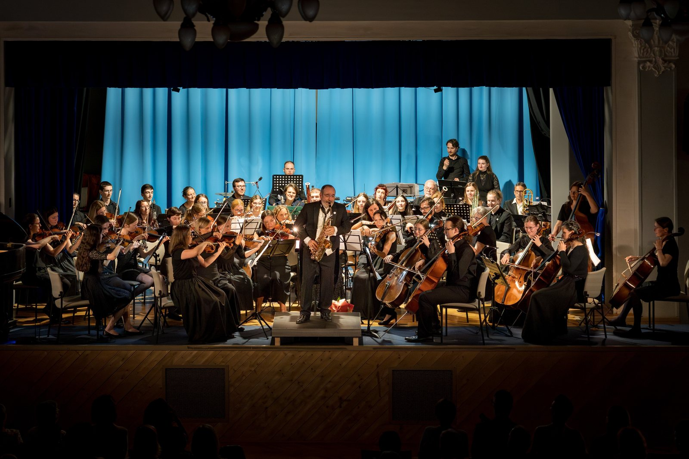

V roce 2023 nás přivedla dohromady láska ke klasické hudbě, a především k té orchestrální. Přestože přes den jsme architekti, učitelé, lékaři, chemici nebo třeba studenti, po večerech se pravidelně scházíme a stávají se z nás muzikanti.

Valdštejnská lodžie, Jičín · 16:00
Do Symfonického Orchestru v Liberci sháníme hráče na smyčcové nástroje, žesťové nástroje a hoboje. V orchestru hrají muzikanti všech věkových kategorií, nejrůznějších profesí a s různou úrovní hudebního vzdělání, tak nemějte obavy, napište nám a přijďte se podívat na zkoušku.
Napište nám